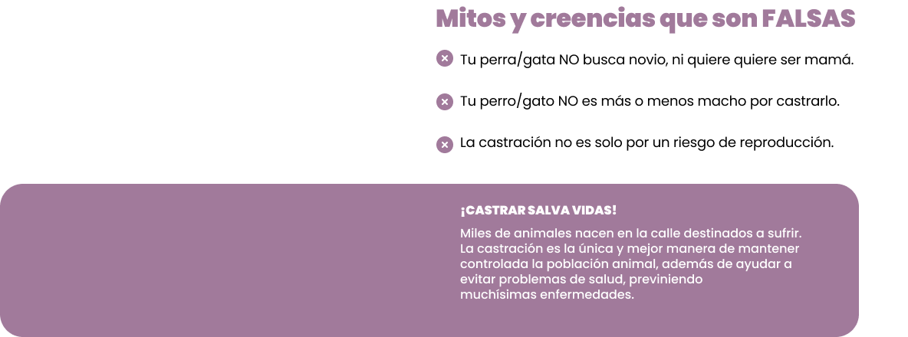

La importancia de castrar

La importancia de castrar
Mitos y creencias que son FALSAS
Tu perro/gato NO busca novia, ni quiere quiere ser mamá.
Tu perro/gato NO es más o menos macho por castrarlo.
La castración no es solo por un riesgo de reproducción.
LA CASTRACIÓN ES LA ÚNICA Y MEJOR MANERA DE MANTENER CONTROLADA LA POBLACIÓN ANIMAL. MILES DE ANIMALES QUE NACEN EN LA CALLE DESTINADOS A SUFRIR, ADEMÁS DE AYUDAR A EVITAR PROBLEMAS DE SALUD A TU perro/gato, PREVINIENDO MUCHÍSIMAS ENFERMEDADES.
Ventajas de la esterilización
En machos

La castración consiste en retirar ambos testículos, procedimiento simple y de rutina.
Disminuye propensión de tumores e infecciones, muy común en machos de edad avanzada.
Disminuye dominancia y se reducen las probabilidades de que se pelee con otros machos.
Pasean más relajados.
Elimina la ansiedad sexual del perro y la conducta de monta.
Evita la conducta de ansiedad de querer estar con una perra en celo, lo que genera estres, nervios y predisposicion a la agresividad.
Disminuye la propia agresividad de la pubertad y el patrón de marcaje al entrar en ésta.
En hembras
La castración consiste en retirar ambos ovarios, procedimiento simple y de rutina.
Elimina las probabilidades de propensión de tumores e infecciones.
Previene la gestación, controlando así la cantidad de población.
Elimina las probabilidades de embarazos psicologicos. Elimina el celo, siendo mas higiénico y dejan de atraer a los machos, desapareciendo además la ansiedad del animal y los maullidos y quejidos de las gatas que provoca este periodo.
Ventajas para la familia
Sus animales serán más sanos y vivirán más años
¿Cuándo hacerlo?
GATOS
Hembras a partir de los 6 meses de edad.
Machos a partir de los 8 meses de edad.
PERROS
A partir de los 7 meses de edad.
Siempre bajo la supervisión de un veterinario para observar el correcto desarrollo del animal.